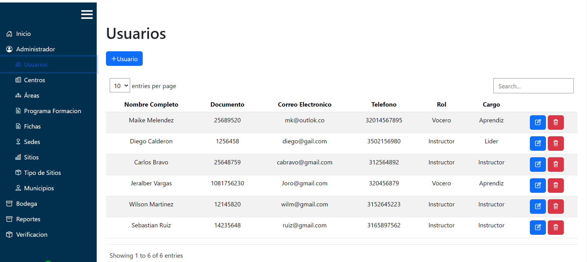

Aqui podemos ver el side bar que nos va a brindar acceso a diferentes modulos con los que cuenta el sistema

Aqui podemos ver el side bar que nos va a brindar acceso a diferentes modulos con los que cuenta el sistema
Si desplegamos la opcion de admin nos apareceran unos submodulos. Como primero tenemos el de usuarios donde encontraremos unas tablas con la informacion de todos los usuarios registrados
